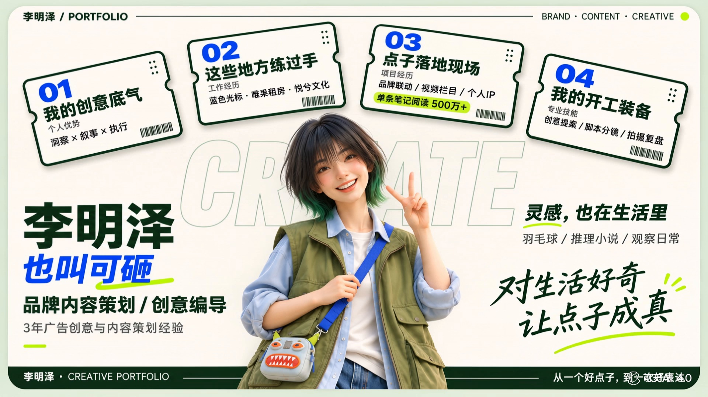

创意策划
把传播目标转化为可执行的创意
擅长品牌洞察与核心概念提炼，能把传播目标转化为清晰的创意方向、叙事结构，以及可落地的脚本方案与执行路径。

点击上方票券，查看详细经历
15822101901 · 1216659416@qq.com
品牌内容策划 / 创意编导
3年广告创意与内容策划经验01 / 个人优势
洞察 × 叙事 × 执行
×把传播目标转化为可执行的创意
擅长品牌洞察与核心概念提炼，能把传播目标转化为清晰的创意方向、叙事结构，以及可落地的脚本方案与执行路径。
从想法到成片，完整推进
可独立完成创意、脚本、分镜、现场执导至成片交付，具备判断创意可执行性与传播潜力的能力。
理解平台，也理解观看的人
熟悉主流平台的传播规律与用户偏好，擅长内容广告、品牌短片与系列化视频创意，有内容栏目从零搭建与系列化运营经验。
拆解需求，表达方案，推动落地
具备客户对接与跨部门协作经验，能将客户抽象需求转化为清晰创意方案，准确拆解需求、清晰表达方案并推动落地。
02 / 工作经历
品牌内容 · 广告传播 · 创意制作
×品牌内容策划
社媒栏目：从零策划《探访100个北京公寓》，以“住进去后的生活”为切入点，设计 E 人／I 人双人出镜、猜价格与带粉丝看房等玩法；负责脚本、拍摄及剪辑推进、封面和发布文案，形成可延展的系列栏目。
品牌内容：围绕青年租住生活、城市归属感与租房痛点，策划公众号、小红书内容，落地“唯果观察”专栏；完成从选题、标题、正文到配图排版的制作。
热点创意：策划《看完早春晴朗，我和我的出租屋面面相觑》《北京的月亮很圆，你的那扇窗也要亮着》等选题，将影视话题、节日情绪与租住生活相连。
活动与媒体：参与 HICOOL 展会、写字楼推广及高校合作的传播主题和物料策划；承担 GEO 项目中大部分文章撰写，协同媒体发布，部分文章进入百度搜索结果及 AI 联网检索参考来源。
效果优化：根据用户预算、区域及通勤需求提炼房源卖点，结合点击、咨询与投放反馈，迭代标题、正文和封面，完成当月单客资成本下降50%的目标。
客户执行（AE）· 项目制
品牌传播：参与 vivo X300 系列演唱会联动传播，配合资深同事跟进客户沟通、方案修改及执行进度；梦龙项目中提出“勇气／勇敢做自己”的创意切入点，参与讨论与内容修改。
用户共创：参与 vivo X300“百天漂流瓶”演唱会共创计划的前期方案搭建，以手机接力串联观众影像与故事，结合影像任务、陌生人寄语和达人接力等玩法；前期工作完成后交接同事继续执行。
达人内容：负责 vivo X300 Ultra／X300s 小红书本竞品横测内容，确定对比角度与卖点表达，逐轮审核、修改达人稿件，整合客户反馈推进定稿。
项目协同：参与梦龙演唱会项目6位不同量级达人的传播执行，跟进选题、脚本和发布时间，检查产品与品牌表述，协同完成内容上线。
创意策划 / 视觉导演
创意与脚本：作为项目创意负责人与导演，围绕品牌诉求、传播目标及受众特点提出创意方向和故事结构，完成脚本、分镜与视觉参考；项目涵盖文旅、品牌广告、教育及新媒体短视频。
内容IP：独立孵化并运营职场内容IP「可砸show」，从账号定位、创意测试到内容制作及迭代，产出多条百万播放内容。
广告开发：参与“火星人集成灶”前期广告创意开发，累计产出200+创意点子与脚本雏形，覆盖品牌主张、产品卖点及多传播场景，为团队完善提案提供参考。
导演制作：组织现场拍摄，负责执导、多机位调度，跟进剪辑、调色与成片修改，把控叙事节奏、画面风格及品牌信息。
人物访谈：独立负责以非遗传承人等为对象的深度访谈项目，挖掘人物的社会脉络与内心世界，提升内容的情感厚度与叙事深度。
03 / 项目经历
品牌联动 / 视频栏目 / 个人IP
×品牌视频栏目 · 栏目策划 / 编导与出镜
策划切入：将“介绍一套房”转为“判断什么样的人适合住在这里”，以租客生活需求组织内容，把交通、配套等信息转化为有代入感的开篇问题。
创意设计：设计 E 人／I 人双人组合，以互动和不同观察视角串联看房，围绕通勤、预算和生活方式，结合猜价格、带粉丝看房等形式，形成统一框架下的差异化选题。
系列延展：围绕每期房源提炼核心看点，串联开篇钩子、内容结构及封面标题；内容同时用于品牌账号传播、销售带看及合作商家转发。
品牌联动传播 · 客户执行 / 创意协作
传播方向：围绕 vivo 影像能力、演唱会拍摄场景及乐迷情绪，将“记录舞台”延伸至“保存现场感受与生活力量”，参与建立品牌表达方向。
创意贡献：在前期方案多轮调整后，从主唱形象与音乐表达中提出“勇气／勇敢做自己”的方向，为团队内部讨论提供新切入点，并与客户后续反馈契合。
方案完善：配合资深同事跟进客户反馈，协同创意团队梳理主题、产品卖点及内容场景，从品牌关联、叙事逻辑和执行条件出发参与审核与修改。
内容落地：参与6位不同量级达人的沟通和执行，结合达人特点完善选题、脚本及品牌表述，跟进稿件确认与发布节点。
小红书创意横测种草 · 客户执行 / 达人内容策划与把控
用户视角：从使用习惯、体验感受与选购顾虑出发，将不同机型的比较融入生活场景，兼顾选购信息与用户共鸣。
表达把控：逐轮审核、修改达人稿件，调整标题、开篇钩子、场景、叙事节奏与对比逻辑，结合达人表达方式和客户反馈推进定稿及发布。
投放期间，本人负责5条内容的站外活跃率为41.2%，站外活跃成本为项目各内容类型最低；意向转化率18.16%，意向行为转化成本4.71元。
创始人 / 创意 / 导演
从零到一：以职场赛道为切口，围绕职场人群的日常困扰、情绪需求和共同经历挖掘选题，结合热点，将用户感受转化为有代入感、能引发讨论的脚本与情节。
独立闭环：账号定位、选题、脚本、执导、后期到数据复盘全部独立完成，跑通“创意策划—内容制作—传播验证—数据复盘—商业合作”的完整流程。
创意 / 导演
创意切入：针对文旅宣传内容雷同、缺乏年轻化表达的问题，从社交媒体语境出发，将地域文化与饮食特色转化为具有网感的视觉表达。
本人负责：创意方向、系列结构设计及政府侧对接，从提案、勘景到拍摄交付独立完成。
交付成果：把八道蒙餐拆成八支短片，形成系列化内容；作品被当地文旅采用为社交媒体端的主要宣传素材。
创意 / 导演
整体策划：为提升品牌辨识度与传播质感，主导完成3支品牌形象短片的整体创意策划与拍摄执行。
双线叙事：以“旅居体验”为核心，采用“理性功能”与“感性体验”的双线表达，呈现设施、区位优势及“如家般的温馨”格调。
04 / 专业技能与教育
创意提案 / 脚本分镜 / 拍摄复盘
×创意发散、核心 idea 提炼、提案结构（洞察—策略—创意—执行）、脚本与分镜撰写、提案现场表达与追问应答。能将一页纸的想法展开为客户听得懂的方案，并应对比稿现场的方向调整。
小红书、抖音、视频号内容方法论；钩子设计、系列栏目搭建、选题库与内容日历、账号矩阵运营；熟悉平台推荐逻辑与内容审核边界，理解投流与自然流量内容的适用场景。
飞瓜数据、新榜及平台后台数据，包括完播、互动、涨粉与留资；点击率、转化率和转化成本的口径统一与归因；围绕项目定义观察指标、判断标准和归因方式。
现场执导与多机位调度、剪辑与调色沟通、演员与供应商统筹、成片质量把关；可独立带小团队完成外景拍摄，并结合预算调整制作方案。
戏剧影视文学 · 本科（双学位）
第二专业学位，系统学习编剧与影视叙事。
新闻学 · 本科
主修学位，新闻采访写作与传播学训练。